Makerere Beans dataset audit.
Real field photographs, published dataset splits, measured findings, and a verified repair of six explicitly added defects. Original-source results and controlled results are reported separately.
Single Windows-11-10.0.26200-SP0 run; Python 3.12.14, NumPy 2.5.3, Pillow 12.3.0. Scan time includes decoding, hashing, measurements, and optional previews; excludes download, extraction, verification, and report writing. Hardware and environment affect timings.
1. Untouched source dataset
Beans is a Makerere AI Lab / NaCRRI dataset of healthy and diseased bean leaves photographed in Uganda. All three archives were downloaded from the lab’s Hugging Face mirror at revision 27aa014ce09b193e1a6f58112d4a66e0eddb69c5 and verified against pinned SHA-256 hashes. Every audited image was then compared with the bytes inside its source archive.
Published splits
| Split | Images |
|---|---|
| train | 1,034 |
| validation | 133 |
| test | 128 |
Published class labels
| Label | Images |
|---|---|
| angular leaf spot | 432 |
| bean rust | 436 |
| healthy | 427 |
No configured signals triggered. The default radius is 4, blur threshold 60, exposure range 35–225, and minimum side 256 px. Zero findings does not establish an absence of semantic leakage, shared specimens, label errors, crops, or rotations.
The archives contain 1,296 files: 1,295 supported JPEG photographs and one 6,148-byte non-image entry, train/healthy/healthy_train.120tore. That entry remains in the local original dataset but is ignored by the image scanner. It was not counted as a broken JPEG.
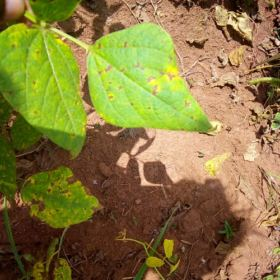
500 × 500 px · brightness 119.9 · sharpness 1484.3
500 × 500 px · brightness 110.5 · sharpness 556.9
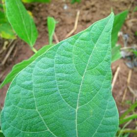
500 × 500 px · brightness 138.8 · sharpness 644.3
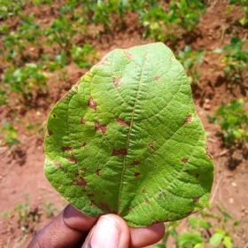
500 × 500 px · brightness 129.7 · sharpness 1327.0
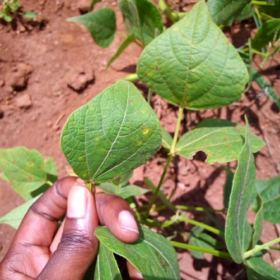
500 × 500 px · brightness 133.4 · sharpness 1494.2
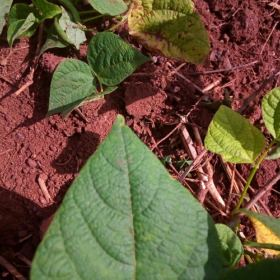
500 × 500 px · brightness 89.1 · sharpness 2197.7
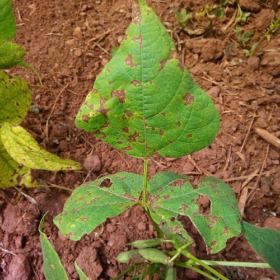
500 × 500 px · brightness 109.3 · sharpness 1682.4
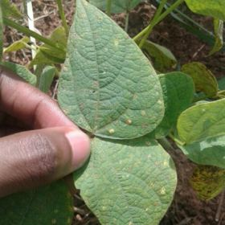
500 × 500 px · brightness 112.1 · sharpness 919.8
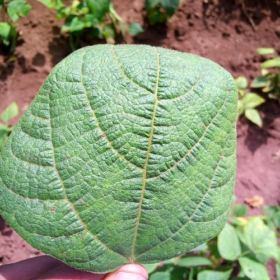
500 × 500 px · brightness 142.7 · sharpness 1637.5
Gallery: the first filename in each split/class combination, sorted by path. These are cached audit previews, not generated illustrations. All 1,295 images contributed to the audit.
2. More candidates require more review
The original measured images were reanalyzed without changing files or decoding again. Only the perceptual radius changed; other gates and thresholds stayed fixed.
| dHash radius | Similar pairs | Cross-split candidates | Total findings |
|---|---|---|---|
| 4 (default) | 0 | 0 | 0 |
| 8 (exploratory) | 7 | 1 | 8 |
| 12 (exploratory) | 119 | 40 | 159 |
A cross-split pair contributes a similarity finding and a leakage-candidate finding. Findings are not independent image counts. Radius-12 candidates were not individually reviewed.
Seven radius-8 pairs were inspected side by side. No duplicate photograph was confirmed. The one cross-split healthy-leaf pair has unresolved specimen/capture-session provenance. The qualitative review is AI-assisted, not expert duplicate ground truth; no original image was excluded.
Candidate 1 · distance 8/64 · Distinct photographs on visual inspection
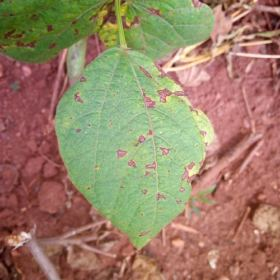
500 × 500 px · brightness 134.5 · sharpness 914.8
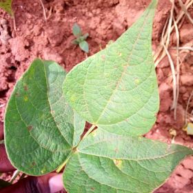
500 × 500 px · brightness 155.0 · sharpness 1817.7
Different leaf arrangements and visible mark patterns despite similar overall color and framing. No repeated photograph confirmed.
Candidate 2 · distance 8/64 · Distinct photographs on visual inspection
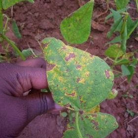
500 × 500 px · brightness 97.6 · sharpness 552.4
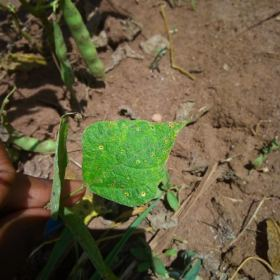
500 × 500 px · brightness 92.1 · sharpness 1109.4
Different background and visible leaf-mark layout. Similar silhouettes alone do not establish duplication.
Candidate 3 · distance 8/64 · Cross-split provenance unresolved
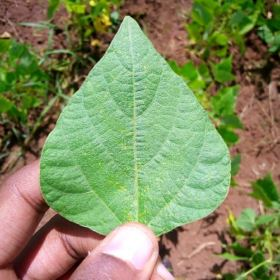
500 × 500 px · brightness 131.7 · sharpness 1246.1
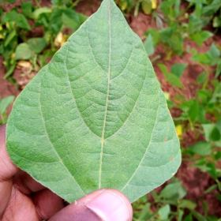
500 × 500 px · brightness 138.6 · sharpness 733.0
The only radius-8 cross-split candidate: similar healthy-leaf silhouettes with different framing and background. A duplicate photograph is not confirmed; shared physical specimen/capture-session identity needs collection metadata.
Candidate 4 · distance 8/64 · Distinct photographs on visual inspection
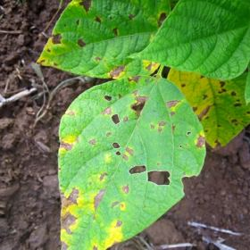
500 × 500 px · brightness 120.1 · sharpness 1327.7
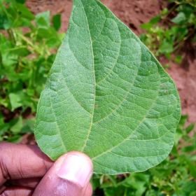
500 × 500 px · brightness 129.5 · sharpness 802.1
Visible holes and leaf arrangements differ substantially. No repeated photograph confirmed.
Candidate 5 · distance 8/64 · Distinct photographs on visual inspection
500 × 500 px · brightness 138.6 · sharpness 733.0
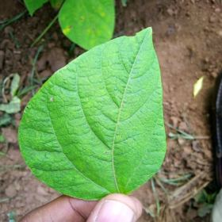
500 × 500 px · brightness 126.6 · sharpness 786.9
Different backgrounds, lighting, and visible leaf-vein details. This review does not establish whether physical specimens are independent.
Candidate 6 · distance 8/64 · Distinct photographs on visual inspection
500 × 500 px · brightness 129.5 · sharpness 802.1
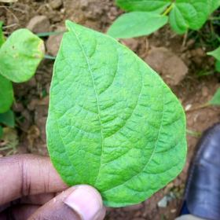
500 × 500 px · brightness 139.0 · sharpness 777.7
Different leaf orientation and background. Similar green leaf shapes can collide in a low-resolution hash; physical specimen identity is not verified.
Candidate 7 · distance 8/64 · Distinct photographs on visual inspection
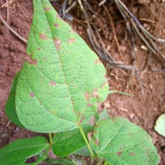
500 × 500 px · brightness 137.0 · sharpness 1354.2
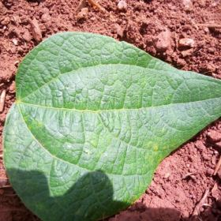
500 × 500 px · brightness 144.9 · sharpness 2636.0
Different compositions and leaf orientation. No repeated photograph confirmed; disease labels were not revalidated.
3. Disclosed contamination and verified repair
A separate copy of the full dataset received six deliberately added files: an exact test-split copy, a JPEG re-encoding in validation, a blurred image, a dark image, a 96 × 96 image, and an unreadable JPEG. These are controlled defects, not defects claimed to exist naturally in the source dataset.
Injected control Original encoded bytes copied into the test split — expected check passed
500 × 500 px · brightness 138.8 · sharpness 644.3
500 × 500 px · brightness 138.8 · sharpness 644.3
Detected: duplicateleakage
Source file is unchanged. This added path was explicitly excluded during repair.
Injected control Same pixels re-encoded as JPEG quality 92 — expected check passed
500 × 500 px · brightness 119.9 · sharpness 1484.3
500 × 500 px · brightness 119.9 · sharpness 1478.4
Detected: leakagesimilar
Source file is unchanged. This added path was explicitly excluded during repair.
Injected control Gaussian blur, radius 14 pixels — expected check passed
500 × 500 px · brightness 110.5 · sharpness 556.9
500 × 500 px · brightness 110.5 · sharpness 1.7
Detected: blurleakagesimilar
Source file is unchanged. This added path was explicitly excluded during repair.
Injected control Brightness multiplied by 0.08 — expected check passed
500 × 500 px · brightness 138.8 · sharpness 644.3
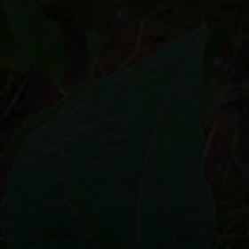
500 × 500 px · brightness 10.5 · sharpness 5.8
Detected: blurdark
Source file is unchanged. This added path was explicitly excluded during repair.
Injected control Resized to 96 × 96 pixels — expected check passed
500 × 500 px · brightness 110.5 · sharpness 556.9
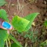
96 × 96 px · brightness 110.7 · sharpness 335.3
Detected: leakagesimilarsmall
Source file is unchanged. This added path was explicitly excluded during repair.
Injected control Deliberately unreadable JPEG encoding — expected check passed
500 × 500 px · brightness 119.9 · sharpness 1484.3
No preview available
0 × 0 px · brightness 0.0 · sharpness 0.0
Detected: broken
Source file is unchanged. This added path was explicitly excluded during repair.
Only the six injected paths were excluded. Verified export took 5.55s on this machine. The resulting 1,295-image folder was audited again and returned 0 default findings. Its relative image paths and SHA-256 values exactly match the untouched baseline. Unsupported archive metadata is not an audited image and is not included in a curated-image export.
Multiple findings can involve one file; the 14 findings are not 14 independently injected defects. Passing these controls establishes a working detection/review/export workflow on these examples, not real-world precision or recall.
4. Run it yourself
Use Python 3.12+ for the recorded dependency versions. The package itself supports Python 3.11+. The example downloads about 180 MB and uses roughly 1 GB of local disk space for archives, separate dataset copies, and reports. Choose a new workdir for a full control run.
git clone https://github.com/FarzamFattahi/splitlens.git
cd splitlens
python -m pip install -r python/examples/beans-requirements.txt
python python/examples/beans_case_study.py --workdir .datasets/beans --controls
python python/examples/render_beans_case_study.py --workdir .datasets/beans --output public/case-studies/beansThe baseline JSON omits local absolute paths. To load it with the downloaded originals, call AuditReport.load_json("baseline.json", root=".datasets/beans/dataset"). The reproduction script downloads data only; it does not execute remote dataset-loader code. Generated JSON/CSV files are small enough to share; the full original dataset and large thumbnail reports stay local.